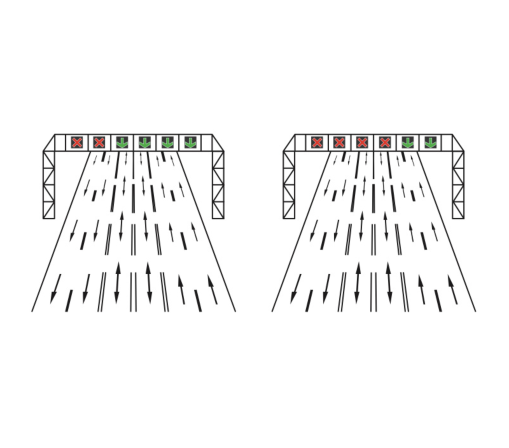

Raspunsuri corecte:
0
Timp:
0
/20
Ce reprezinta indicatorul din imagine?

Dispoziții pentru circularea corecta pe benzi.
Dispoziții luminoase pentru dirijarea circulația pe benzi reversibile.
Dispoziții pentru benzi deschise / inchise circulatiei pe autostradă.
Ce indica semnalul galben cu sageata in diagonala prezent pe dispozitiile luminoase pentru dirijarea circulatiei pe benzi reversibile?
Permite intrarea si circularea pe banda respectiva
Avertizeaza conducatorul auto ca trebuie sa circule cu viteza redusa
Banda este inchisa circulatiei si esti obligat sa te deplasezi pe banda/benzile indicate
Ce indica semnalul galben cu sageata in diagonala prezent pe dispozitiile luminoase pentru dirijarea circulatiei pe benzi reversibile?
Puteți circula pe banda reversibilă, respectând regulile normale de circulație
Traficul este interzis pe banda reversibilă, indiferent de starea semnalului luminos
Puteți utiliza banda reversibilă numai în situații de urgență
Ce indică un semnal luminos intermitent pe banda reversibilă?
Traficul este interzis pe banda respectivă
Traficul este permis pe banda respectivă, dar cu precauție
Traficul este încetinit pe banda respectivă
La acest quiz ai obtinut:
1
puncte
Apasa aici pentru a merge la lista cu quiz-uri